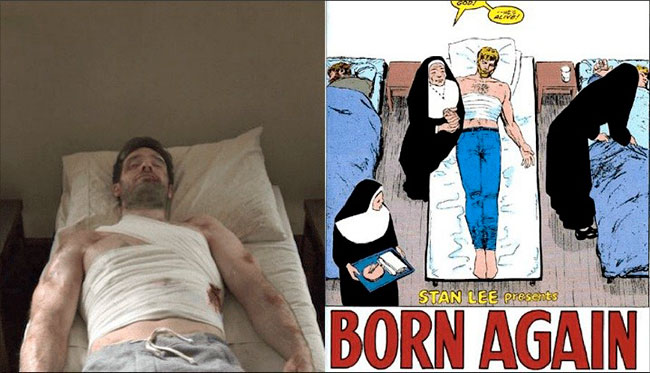

Todo sobre la temporada 3
Cada vez está más cercana en el tiempo la tercera temporada de 'Daredevil', por lo que hemos considerado oportuno realizar un repaso a todo lo que se sabe sobre ella hasta la fecha. Ya os avisamos de que encontraréis spoilers tanto de las dos primeras temporadas como de 'The Defenders', algo que os recomendamos tener en cuenta antes de seguir leyendo.
Argumento
Puede que haya elementos de 'Born Again', pero estoy seguro de que también habrá otros no familiares, sorprendentes y diferentes para que la serie sea absorbente para los fans que ya conozcan bien los cómics. Si hiciéramos 'Born Again' página página, entonces para quien lo haya leído y le haya encantado, los fans a muerte, no habría demasiado drama.
Esa es la respuesta que dio Charlie Cox cuando le preguntaron acerca de la posibilidad de que la tercera temporada de 'Daredevil' adaptase 'Born Again', el aclamado arco argumental escrito por Frank Miller y dibujado por David Mazzucchelli en 1986. La duda vino principalmente porque el desenlace de 'The Defenders' abría esa posibilidad con una imagen de Matt Murdock que nos hacía pensar de inmediato en ese cómic. No obstante, la propia serie ha hecho imposible que la adaptación pueda ser completamente fiel, ya que Ben Urich, que fue asesinado en la primera temporada, juega un papel esencial, mientras que en el mismo Karen Page es una actriz porno adicta a la heroína que vende la identidad de Daredevil a cambio de una dosis. Esa información llega a Wilson Fisk, quien no duda en convertir la vida de Matt Murdock en un infierno.
Lo que sí parece claro es que el resto de protagonistas aún estarán creyendo al comienzo de la temporada que Matt Murdock ha muerto, algo lógico si tenemos en cuenta cómo se hizo el héroe al final de 'The Defenders'. Luego ya llegará la más que probable reconciliación definitiva con Karen Page (Deborah Ann Woll) y Foggy Nelson (Elden Henson), ya que la relación con ellos quedó bastante dañada tras lo sucedido en la segunda temporada, dando unos primeros pasos en la buena dirección en 'The Defenders'.